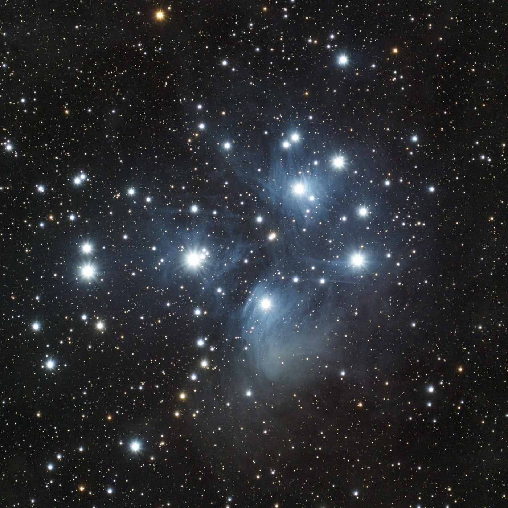
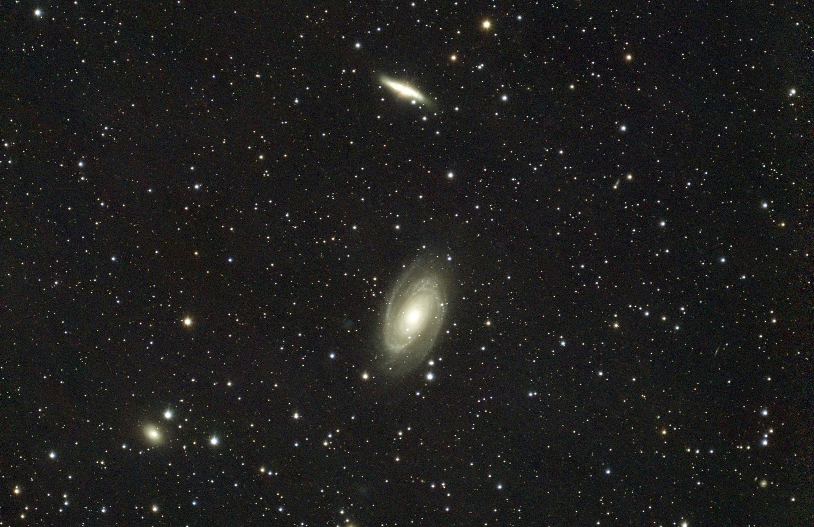
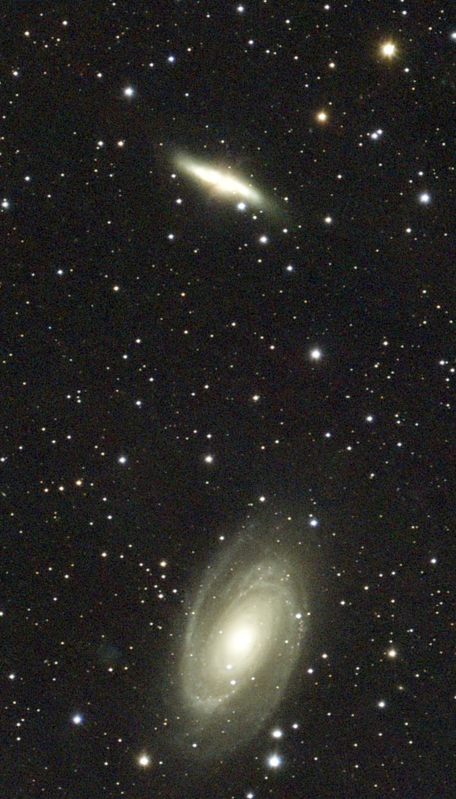
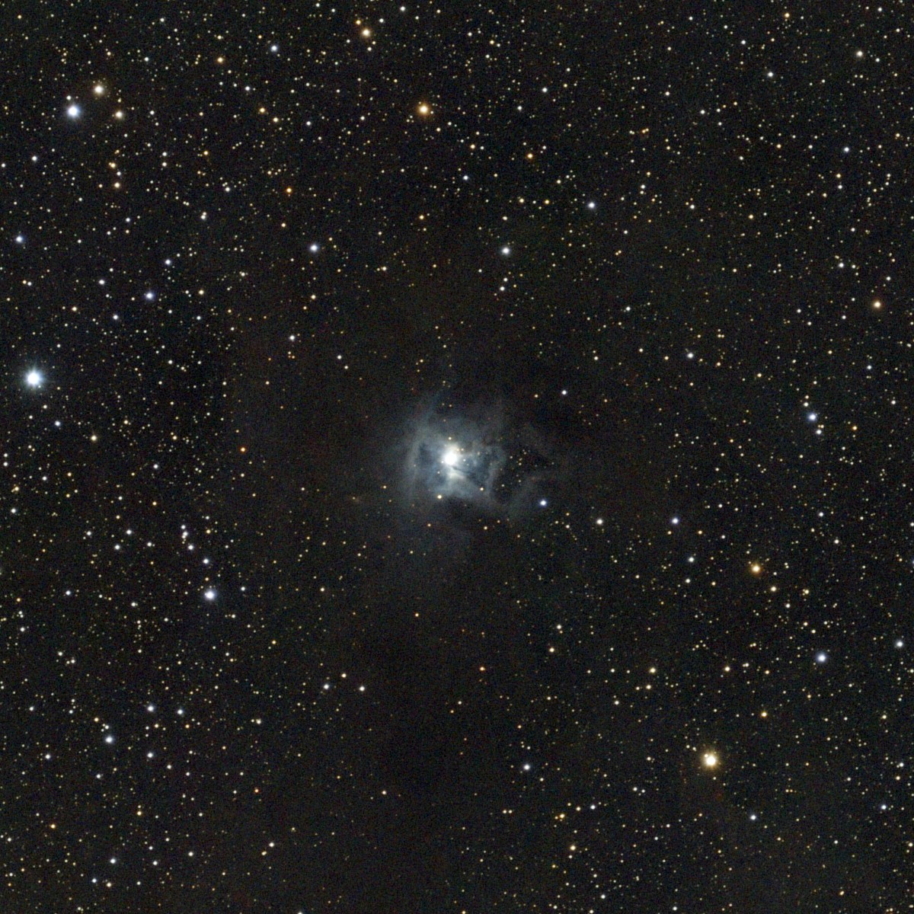
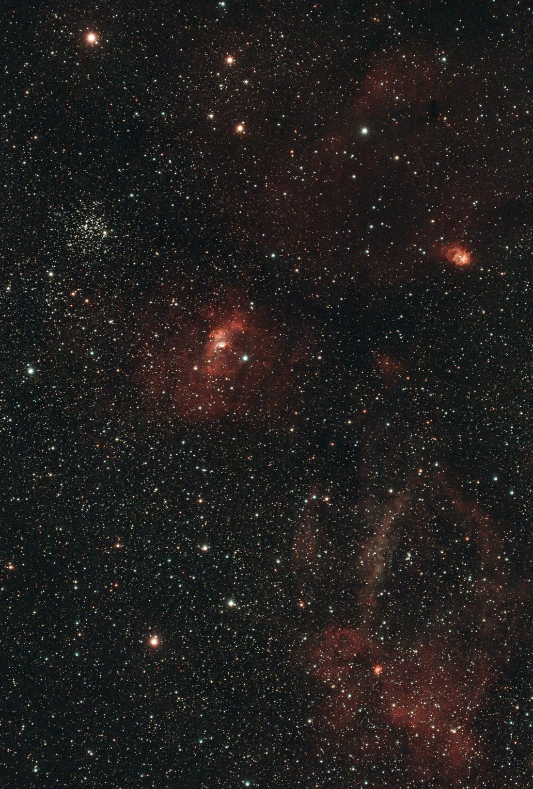
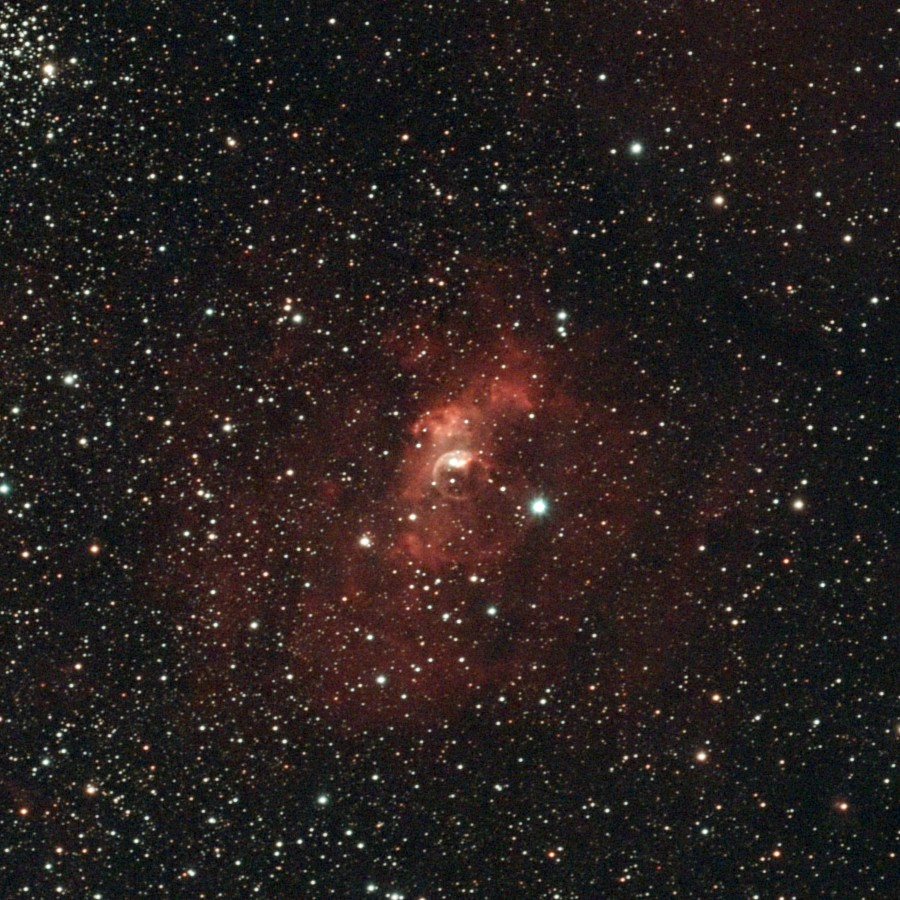

Night log · Thursday 12 November 2026
A whole moonless night: the Pleiades, M81 and M82, the Iris and the Bubble
The plan
All three forecast models had clear sky from dusk to dawn, with the Moon a thin crescent that stayed below the horizon all night. A night like that is for targets that need real darkness: faint dust that only shines by reflected starlight, and galaxies. The battery and power bank were full, so the plan ran all night:
- The Iris Nebula (NGC 7023), 18:30 to 21:00, to add to 37 minutes from 31 October, when cloud stopped it early.
- The Bubble Nebula (NGC 7635), 21:00 to 23:00, to add to the 18 minutes from 30 October.
- The Pleiades (M45), 23:00 to 02:00, when it is highest in the south.
- Bode's Galaxy and the Cigar Galaxy (M81 and M82), 02:00 to 05:15, climbing in the north-east before dawn.
- Captured
- 18:53–05:15
- Settings
- 20 s · gain 200
- Moon
- 12% lit, below the horizon
- Mount
- TH10 wedge, EQ
The night
The app's polar alignment read 0.1° on both axes. The first start failed because the app was still open on its alignment screen and holding on to the camera; with the app closed, the run started at 18:48 and went through to 05:15 without a pause. Nothing was lost to cloud. It took its darks and parked at half past five, with the dew heater left on.
- Iris
- 245 × 20 s · 1 h 22 min
- Bubble
- 242 × 20 s · 1 h 21 min
- Pleiades
- 366 × 20 s · 2 h 2 min
- M81 and M82
- 402 × 20 s · 2 h 14 min
It was also the peak night of the Northern Taurid meteor shower. The telescope's field is about 4° by 2°, far too small to catch meteors, so it carried on with the galaxies.
Two things we found
The centring problem was in the software. For weeks the telescope seemed to land 3 to 6 arcminutes from where it was sent, and on 30 October it once reported itself centred when it was 19 arcminutes off. The cause turned out to be the plate-solver, the part that works out where the telescope is pointing from the pattern of stars in a frame. It was reporting the middle of the group of stars it had recognised, not the middle of the picture, and that group changes from frame to frame. Every position it measured was off by a few arcminutes in a different direction. It now works out the true centre of the frame, and re-solving this night's frames gives a smooth, steady track.
The polar alignment was further out than the app said. With the solver fixed, the frames show the pointing creeping north at about 11 arcseconds a minute on the first three targets, and half that on M81 and M82. That pattern is what you get when the mount's axis is off the pole, and the size of it says by how much: about 1° too far east and a quarter of a degree too high, not the 0.1° the app showed. Tracking was still good enough for round stars in 20-second frames, but the picture slowly crept across the frame and the telescope had to keep re-centring. Next time the alignment gets checked against the drift as well as the app.
The Pleiades, two nights stacked
The Pleiades were one of the first targets on this site, with 3 hours 19 minutes on 9 October. This night added two more hours, and the two nights stacked together make 764 frames and 5 hours 21 minutes, the longest total so far. The cluster is a family of young, hot stars about 440 light years away, passing through a cloud of dust that has nothing to do with them. The dust reflects their blue light, and with five hours behind it, the fine streaks in it show clearly, especially in the fan below Merope, the bright star at the bottom of the main group.

Bode's Galaxy and the Cigar Galaxy (M81 and M82)
A first try at galaxies from the garden. These two are about 12 million light years away, in Ursa Major, and close enough to each other that their gravity has stirred both up.
- M81, Bode's Galaxy, is the big spiral in the middle, with a bright yellow core and its arms wound tightly around it.
- M82, the Cigar Galaxy, is the thin streak at the top, a galaxy seen edge-on. It is forming stars around ten times faster than our own galaxy.
- NGC 3077, the small fuzzy oval at the bottom left, is a third member of the group.


The Iris Nebula, two nights stacked
The Iris is a cloud of dust in Cepheus, about 1,300 light years away, lit by a young star buried inside it. Dust doesn't glow on its own; it reflects the star's light, and blue light bounces off it best, which is why it looks like a pale blue flower. Around it is a much bigger cloud of dark dust that blocks the stars behind it: look at how empty the sky is just below and to the right of the Iris. Two nights stacked make 355 frames and just under 2 hours.

The Bubble Nebula, two nights stacked
The 18 minutes from 30 October and this night's 81 minutes, stacked together, make 297 frames and 1 hour 39 minutes. That is enough to show what was only hinted at last time: the Bubble sits in a much larger red cloud, and the wide view takes in a whole region of Cassiopeia where stars are forming.
- The Bubble (NGC 7635), in the middle, with M52, the star cluster, on the left.
- NGC 7538, the bright red knot at the upper right.
- The Lobster Claw Nebula (Sh2-157), the curving arc and red clouds at the bottom right, new in this picture.


Next
A proper polar alignment check before the next run, measured from the drift rather than taken from the app. With the solver fixed, the guide pulses get re-tested too: they looked unusable on every night so far, but those tests were measured with the same faulty solver, so they may work after all, and that would bring back dithering.